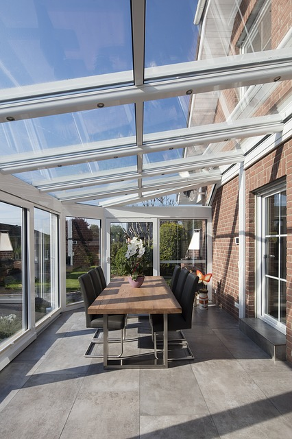

Parce que chaque véranda est différentes, chacune de nos réparations est effectuée pour respecter au mieux la structure de votre véranda.
Nos professionnels de la véranda vous accompagnent et vous conseillent dans les choix qui correspondront au mieux à votre besoin. N’hésitez pas ils sont à votre disposition.
Notre équipe s’engage à vous fournir des réponses claires et précises à toutes les demandes faites sur son site sous un délai maximum de 48 heures ouvrées.
Toutes nos interventions s’effectuent sur devis. En signant ce devis nous nous engageons à respecter notre mission, mais aussi les délais annoncés.
Nous sommes qualifiés RGE Qualibat ce qui prouve notre sérieux dans les chantiers que nous entreprenons. Nos experts ont toutes les qualifications requises afin de répondre à toutes vos demandes.
Toujours dans l’objectif de répondre au mieux aux besoins et aux envies de nos clients, nous vous proposons une multitude de texture et de couleurs pour composer et personnaliser votre véranda.
Premier élément à subir l'usure du temps, la toiture de votre véranda est exposée à toutes les formes d'intempéries : rayons solaires, gel, grêle et pluie.
Devant être solide, résistante mais surtout performante, la véranda de votre toit doit avoir une isolation thermique de qualité pour faire face aux intempéries de façon robuste.
Si l'on attend beaucoup de la toiture de votre véranda, il est important savoir qu'elle mérite mieux que les intempéries.
Mais en cas de destruction, une rénovation ou une réparation de votre véranda s'impose.
Et c'est là qu'interviennent les professionnels qualifiés de votre shop http://www.reparationveranda.fr/
A partir du moment où vous réalisez une construction, vous serez certainement amené à faire une déclaration, peut-être même à déposer un permis de construire. Voici les règles qui vous sont alors imposées. Si vous ne modifiez pas la taille ni l'apparence, mais que vous vous contentez d'un simple rafraîchissement et de changer le sol, des roulettes, vous n'avez rien à faire ; Si vous modifiez la surface de moins de 5 m², vous n'aurez pas, non plus, de déclaration à effectuer ; Entre 5 m² et 20 m² de modifications, vous devrez en passer par une déclaration préalable de travaux ; De 20 à 40 m² d'agrandissement, une déclaration préalable de travaux pourra aussi suffire si la surface de la maison ne dépasse pas, alors, les 150 m² ; De 20 à 40 m² d'agrandissement et une maison qui dépasse par ce fait les 150 m², ou plus de 40 m² de travaux, vous devrez demander un permis de construire. Attention, aussi, que votre maison ne soit pas à proximité d'un site classé, sinon vous ne pourrez pas changer l'apparence de votre véranda sans l'avis des Bâtiments de France. Et si votre pavillon venait à dépasser les 150 m² avec un agrandissement, il vous faudra aussi faire appel à un architecte.
Même si elle paraît plus en forme, la structure de votre véranda a dû recevoir un coup du fait de l'usure dans le temps : les intempéries, la pollution urbaine, les mécanismes des ouvertures manœuvrés plusieurs fois dans une même journée… Raison fondamentale pour laquelle il est indispensable de rénover certains éléments qui la compose. Afin de lui concéder sa solidité et pour qu'elle reste habitable et confortable toute l'année, faire appel à une équipe de professionnels pour permettre d'être toujours une véritable pièce à vivre est plus qu'évidente. D'ailleurs, les exigences en terme de confort ne sont pas restées statiques ! La qualité des matériaux entrant dans sa construction : (aluminium, verre, panneaux isolants, panneaux polycarbonates…) a fait d'énorme progrès avec l'imposition du respect des nouvelles normes et réglementations, exigeants une meilleure performance de l'isolation été comme hiver pour limiter les consommations d'énergie.
En menuiseries, les matériaux les plus prisés sont le PVC, le bois, l'aluminium et parfois le fer forgé. Cependant, pour votre véranda, l'aluminium reste le matériau le plus conseillé. Robuste et léger avec des parois fines qui offrent une bonne luminosité dans votre pièce ou véranda, l'aluminium demeure le matériau de choix en matière d'isolation thermique. L'on lui reconnait également sa performance dont la rupture de pont thermique est la base. De plus, en choisissant l'aluminium comme matériau pour les lames de votre véranda, vous pouvez être certain de la résistance qu'il offre aux agressions extérieures telles que les intempéries et la pluie mais face au temps grâce à sa longévité.
A cela s'ajoute le choix du vitrage qui passe aujourd'hui du simple au double vitrage renforcé pour une meilleure performance thermique. Vous pouvez même opter pour le système du triple vitrage si votre maison est à basse consommation et qu'elle se trouve dans une région suffisamment froide. Il y a aussi le choix des volets et du système d'ouverture. Pour moins d'encombrement, plus de facilité d'usage et plus de sécurité, nous vous conseillons le système coulissant. Enfin, il reste la toiture qui participe aussi à la bonne isolation de votre véranda. Il existe aujourd'hui les « panneaux sandwich » qui sont réputés pour leur performance isolante.

Si vous avez quelque doute quant au choix de ces matériaux pour rénover votre véranda, vous pouvez toujours contacter un professionnel et lui demander conseil. D'autant plus que tous les travaux qui vont suivre devront être effectués par un spécialiste. Encore faut-il que ce soit un bon spécialiste. A cet effet, procédez à une petite recherche minutieuse en comparant plusieurs professionnels avant de faire votre choix. Le devis pourra vous aider à y voir plus clair et à mieux choisir.

Pour rénover votre véranda, voici maintenant quelques conseils simples pour commencer, avant de vous lancer, ensuite, dans la recherche d'un professionnel pour les plus gros travaux. Pour un coût relativement faible, vous pourrez déjà donner un coup de neuf à cet espace. Il vous faut dresser la liste de tout ce que vous souhaitez faire ou faire faire, sachant que, comme n'importe quelle autre construction, il faut toujours commencer par le gros œuvre, s'il y en a, continuer par le second œuvre et terminer par les finitions.
Mais vous pourrez peut-être effectuer vous-même une partie de ces tâches. C'est le cas pour :
Si vous n'êtes absolument pas bricoleur ou si vous envisagez une rénovation plus lourde, mieux vaut vous en remettre à un expert.
Notre véranda date d'environ une vingtaine d'années, il devenait nécessaire voir indispensable pour nous de lui redonner un coup d'éclat. Les vitres étaient abimées, l'isolation laissée a désiré, les joints étaient quasi inexistants… Lorsque nous avons contacté plusieurs sociétés, certaines nous disaient qu'il fallait carrément la détruire et en reconstruire une. L'entreprise Réparation Véranda a été la plus honnête et la plus claire lors de l'élaboration du devis. Nous n'avons pas été déçus bien au contraire, nous les recommandons à tous nos contacts.
Suite à la tempête de cet hiver, les grêlons avaient fissuré ma véranda. J'avais peur que toute la vitre cède. J'ai appelé en urgence Réparation Véranda, qui est intervenu dans la journée. La réparation s'est effectuée en 4 jours le temps qu'ils commandent la vitre correspondante. Une équipe de professionnels que je recommande.
Lorsque nous avons racheté notre maison, la véranda avait besoin d'un bon coup d'entretien et surtout d'une bonne isolation. Vous avez refait toute notre isolation et nous en sommes très satisfaits !